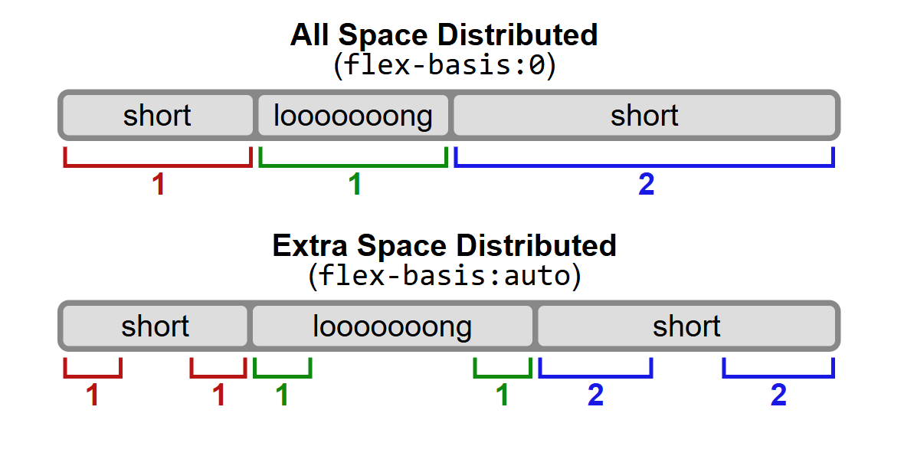

Flexbox & Grid
Flex Box – Parent – Direction, Wrap, Flow
Flexbox is a layout model that allows you to design flexible and responsive layouts. The flex-direction property defines the direction of the flex items, flex-wrap controls whether the items should wrap or not, and flex-flow is a shorthand for both.
.container {
display: flex;
flex-direction: row; /* row, row-reverse, column, column-reverse */
flex-wrap: wrap; /* wrap, nowrap, wrap-reverse */
flex-flow: row wrap; /* shorthand for direction and wrap */
}

Flex Box – Parent – Justify Content
justify-content aligns flex items along the main axis. It controls the spacing between and around items.
.container {
display: flex;
justify-content: center; /* flex-start, flex-end, center, space-between, space-around, space-evenly */
}

Flex Box – Parent – Align Items
align-items aligns flex items along the cross axis. It controls how items are positioned vertically.
.container {
display: flex;
align-items: center; /* flex-start, flex-end, center, stretch, baseline */
}

Flex Box – Parent – Align Content
align-content aligns flex lines when there is extra space in the cross axis. It only works with multi-line flex containers.
.container {
display: flex;
flex-wrap: wrap;
align-content: space-between; /* flex-start, flex-end, center, stretch, space-between, space-around */
}

Flex Box – Child – Grow, Shrink, Order
flex-grow defines how much a flex item will grow relative to others, flex-shrink defines how much it will shrink, and order controls the order of items.
.item {
flex-grow: 1; /* default 0 */
flex-shrink: 1; /* default 1 */
order: 2; /* default 0 */
}

Flex Box – Child – Flex Basis, Flex Shorthand
flex-basis sets the initial size of a flex item. The flex shorthand combines flex-grow, flex-shrink, and flex-basis.
.item {
flex: 1 1 200px; /* grow, shrink, basis */
}

Flex Box – Child – Align Self, Games, Task
align-self allows individual flex items to override the align-items property.
.item {
align-self: flex-end; /* auto, flex-start, flex-end, center, baseline, stretch */
}

Grid – Parent – Template Columns
grid-template-columns defines the columns in a grid layout.
.container {
display: grid;
grid-template-columns: 100px 200px auto; /* defines column sizes */
}

Grid – Parent – Template Rows And Gap
grid-template-rows defines the rows in a grid layout, and gap sets the spacing between grid items.
.container {
display: grid;
grid-template-rows: 50px 100px;
gap: 10px; /* row-gap and column-gap */
}

Grid – Parent – Justify Content And Align Content
justify-content and align-content align the grid items along the main and cross axes.
.container {
display: grid;
justify-content: center;
align-content: center;
}

Grid – Parent – Complete Layout With Template Areas
grid-template-areas allows you to define named grid areas for easier layout management.
.container {
display: grid;
grid-template-areas:
"header header"
"sidebar main"
"footer footer";
}

Grid – Child – Grid Column And Grid Row
grid-column and grid-row define the placement of grid items within the grid.
.item {
grid-column: 1 / 3; /* start at column 1, end at column 3 */
grid-row: 1 / 2; /* start at row 1, end at row 2 */
}

Grid – Child – Grid Area And Trainings
grid-area assigns a grid item to a named area defined in grid-template-areas.
.item {
grid-area: header; /* assigns to the 'header' area */
}

Grid – Min, Max And Auto Fill
minmax() and auto-fill allow for responsive grid layouts.
.container {
display: grid;
grid-template-columns: repeat(auto-fill, minmax(200px, 1fr));
}